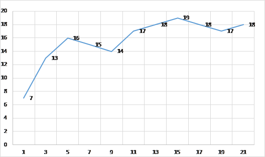
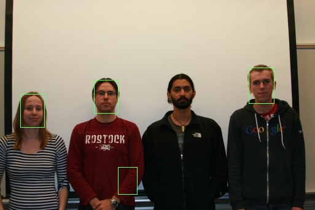
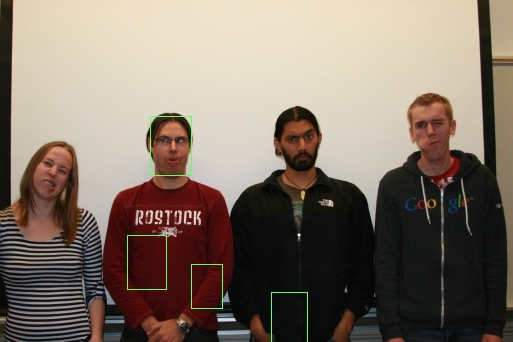
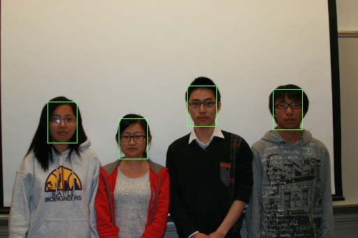
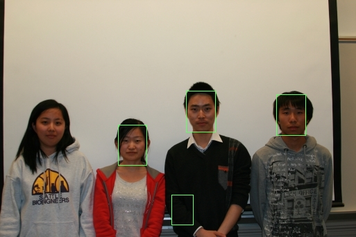
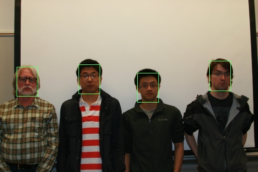
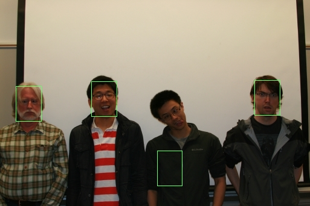

1.Testing recognition with cropped class images
(a) I use the cropped, neutral students within the neutral folder to compute 10 eigenfaces.
Average face:

Eigenfaces:
(b) I try to recognize the photos in the interesting images folder by these 10 eigenfaces using commend
$for %A in (interesting/*.tga) do (main --recognizeface interesting/%A neutral.user neutral.face 1)
This commend will return the best matched image in neutral folder. And results are shown in this below table.
| image_id | faces to be recognized | face matched | faces should be mathced | status | matched mse |
| 01 | matched | 20335.1 | |||
| 02 | not matched | 96835 | |||
| 03 | not matched | 22589.4 | |||
| 04 |  |
not matched | 73442.4 | ||
| 05 | matched | 59766.8 | |||
| 06 |  |
matched | 21208.9 | ||
| 07 | not matched | 58974.3 | |||
| 08 | matched | 12656.9 | |||
| 09 | matched | 25196.8 | |||
| 10 | matched | 33461.6 | |||
| 11 | matched | 18382.3 | |||
| 12 | matched | 45451.3 | |||
| 13 | matched | 21164 | |||
| 14 | matched | 9223.79 | |||
| 15 | not matched | 146803 | |||
| 16 | not matched | 27121.1 | |||
| 17 | matched | 6018.54 | |||
| 18 | matched | 12470.4 | |||
| 19 | matched | 35719.8 | |||
| 20 | matched | 12178.7 | |||
| 21 | not matched | 13893.2 | |||
| 22 |  |
matched | 13188.1 | ||
| 23 | matched | 3351.31 | |||
| 24 | matched | 5884.7 |
(c) Plot the number of faces correctly recognized versus the number of eigenfaces used.

- Describe the trends you see in your plots. Discuss the tradeoffs; how many eigenfaces should one use? Is there a clear answer?
- You likely saw some recognition errors; show images of a couple. How reasonable were the mistakes? Did the correct answer at least appear highly in the sorted results?
- Generally speaking, more eigfaces used can help to recognize better result. But, from this chart, it appears that accuracy not increase a lot after using 10 eigenfaces and too many eigenfaces will make the process much slower. In this case, 10 might be a good number of eigenfaces to use. Hence, there is no clear answer between running time and accuracy, it depends on the need.
- 3 mistakes that occur very often:
These mistakes are probably caused by wired head position or the girl take off her glasses or a large area of dark color in the image. I think if we do some special handle, like only search area which has human skin color, it may performs better.
2.Cropping and finding faces
(a) crop the group/test_single.tga image.
main --findface group/test_single.tga neutral.face 0.6 0.85 0.05 crop 1 cropped_face.tga
| Input image |
Cropped image |
(b) I try to find my friend's face in his protrait. But no matter what parameters I use, the result is very bad. So, I add his silly big head into the neutral folder and compute eigenfaces again. Using these new eigenfaces, I finally find his face.
 |
|
| Use his face compute new eigenfaces |
Marked image |
(c) Mark the faces in two different group photos of students.






Questions
- What min_scale, max_scale, and scale step did you use for each image?
- Did your attempt to find faces result in any false positives and/or false negatives? Discuss each mistake, and why you think they might have occurred.
- I use min_scale = 0.6, max_scale = 0.85, and step parameters =0.05 to do this test and get these results.
- My algorithm is still not that robustic. Some faces in the group images are not marked correctly. When there appear some dark color area, it may regard it as a face. Because the variance is low so the mse estimation is good.